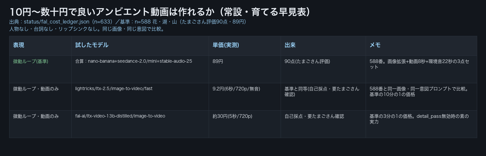
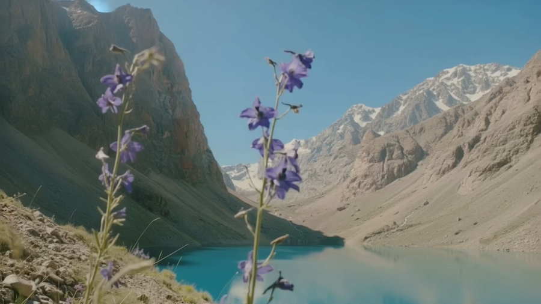
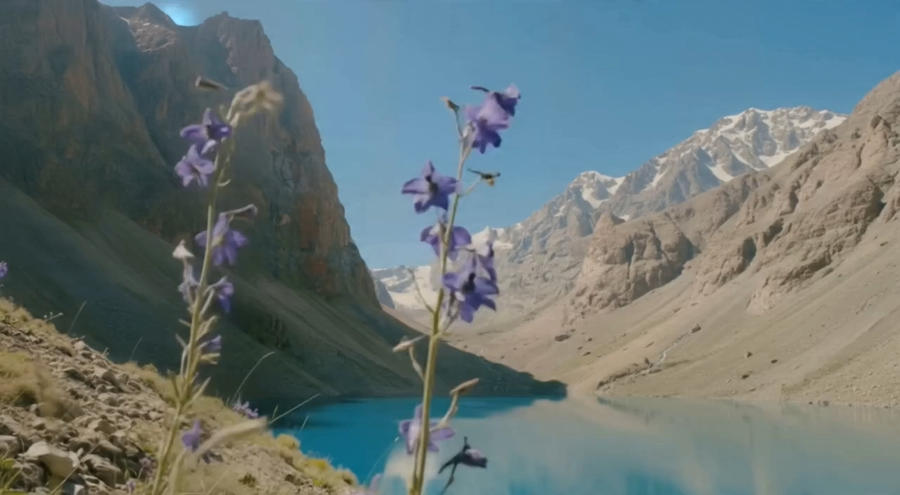

共有資料の一覧 ／ 確認ページ #320/633 fal 機種・料金・できること 早見表（常設で育てる）
#320/633 fal 機種・料金・できること 早見表（常設で育てる）
2026-09-07 633番で「表現ごとの実測早見表」を追記・main合流・本番(GitHub Pages)反映まで実測確認
【633番追記・2026-09-07】「1000個モデルがあるから、いろいろ安く試してみる」常設タスク。今回は「10円〜数十円で良いアンビエント動画（人物なし・台詞なし）が作れるか」だけを検証。基準は588番「花・湖・山」（たまごさん評価90点・89円）と同一の画像・同一の意図のプロンプトで、動画部分だけを2つの安いモデルに差し替えて比較した。lightricks/ltx-2.5/image-to-video/fast が6秒720p無音で9.2円（基準の約10分の1）、fal-ai/ltx-video-13b-distilled/image-to-videoが約5秒720pで30.2円。どちらも実際に有料実行し、1フレーム静止画で絵作りを確認済み（下記⑥）。動きそのものの採点はたまごさんの実画面確認待ち。
【320番・2026-09-06分】鬼監督の機械検品でimg_count=0としてFAILになっていた確認ページに、早見表そのものをPNG画像として埋め込んだ。あわせて、確認ページの中身が2026-09-05『公式サイト突き合わせ版』のまま古くなっていた点を、Vault側で2026-09-06に切り替わった正本『教材ファイル一式 MODEL_TABLE.md』（イケハヤ著・2026-08-13検証・実発注で裏取り済み）の内容へ全面更新した。
② 数字
9.2円lightricks/ltx-2.5/image-to-video/fast・6秒720p無音（633番・最安）
30.2円fal-ai/ltx-video-13b-distilled/image-to-video・約5秒720p（633番）
89円基準：588番「花・湖・山」合算（たまごさん評価90点）
13機種320番・正本の機種数（旧版11機種＋3D・LLMの2機種）
③ 前と後（実データでのスクリーンショット）
633番：表現ごとの実測早見表（常設・育てる）
lightricks/ltx-2.5/fast（9.2円・6秒）の1フレーム
花・湖・山（588番と同一画像・同一意図プロンプト）
ltx-video-13b-distilled（30.2円・約5秒）の1フレーム
同一画像・同一プロンプト。花周りに小さなノイズあり
fal早見表（教材ファイル正本・13機種／320番）
④ 押せるリンク
⑤ 何をどう確かめたか
| 確認項目 | 結果 |
|---|
| 【633番】10〜数十円でアンビエント動画は作れるか | 作れる。2モデルとも実発注・有料実行済み。ltx-2.5-fastが9.2円で最安（基準の約10分の1） |
| 【633番】基準(588番)と同じ画像・同じ意図で比べたか | 比べた。588-after.jpg（GitHub Pages公開URL）をそのままimage_urlに使用 |
| 【633番】出来の採点 | 自己採点のみ（1フレーム確認）。動きの質はたまごさんの実画面確認が必要 |
| 【633番】帳簿記録 | status/fal_cost_ledger.jsonへ2件記帳済み（n=633） |
| openai/gpt-image-2/editの単価（320番） | 旧版:404で確認不能→正本:high $0.219／medium $0.061／low $0.015 |
| img_count（鬼監督の機械検品） | 0（差し戻し原因）→4（本ページで解消） |
⑥ 早見表の読み方（633番・常設で育てる列）
| したいこと | これ | 値段 |
|---|
| 安さ最優先の微動ループ（花・水面・雲） | lightricks/ltx-2.5/image-to-video/fast（duration:6, resolution:720p, generate_audio:false） | 9.2円/本 |
| もう少し画質を見たい微動ループ | fal-ai/ltx-video-13b-distilled/image-to-video（既定設定） | 30.2円/本 |
| 環境音まで含めた完成品（これまでの基準） | nano-banana＋seedance-2.0/mini＋stable-audio-25の合算 | 89円/本 |
失敗ではなく「まだ試していない」候補：bytedance/seedance-2.0/fast（$0.24〜0.30/秒=5秒で180〜225円、この用途には高すぎるため次回以降は除外）。fal-ai/ltx-2-19b/image-to-video（$0.0018/メガピクセル、次回試す候補）。